MOrror
--- the mirror of the future
(MO means Magic in Chinese)
0 Main interface
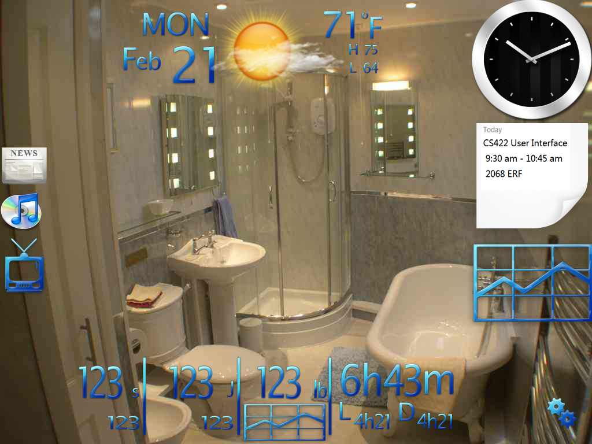
At the top middle of the mirror, are date, local weather and temperature. At the right side, from top to bottom, are local time, next event in calendar and stock information.
At the lest side, are icons for news, music and TV.
I put them this way so that right-handed users can read while brushing teeth.
The bottom is for health information, including steps, calories and weight. The larger numbers in steps and calories sections are current value of today, while the small ones are for yesterday. Besides current weight, it also shows a diagram of recent trend to users.
At the lower right corner, is option button, by pressing which you can change language settings, see application information and edit other parameters.
General features:
- gadgets are draggable,so users can customize gadgets' position.
- tapping one gadget will enter specific interface. This interface's position is based on gadget's position. There'll be a mathematical function to control it. Generally, if the gadget is at right side, the interface will pop-up to the left of it.
- sometimes during using this application, users may need keyboard. It will pop-up below or above (according to interface's position) the interface that calls up the keyboard.
- currently, resolution is 1024*768 because i don't know how to set none-square pixel in photoshop. To keep it 4 feet by 3, let's just make it this way for now.
More functionalities:
- There will be a multi-functional switch plane in the wall of the bathroom where this application planted.
- Registered users hold the plane for 2 seconds and they are logged in because the switch knows their fingerprints.
- Other users hold it for 2 seconds and they will log in as a guest.
- Anyone who press the plane shortly, will turn on 1) light source in the mirror; 2) a login interface. Users can login as one registered user or guest user here or register new users here.
- When logged in, short press is for log out and go back to login interface; hold is for shutdown.
- No operation for 3 minutes, the application will automatically shut down.
- -----
- There is also a remote control for those who want to lie in bathtub while watching TV on MOrror.
Tap each of these gadgets or icons and users will enter interface of specific function.
1 Clock
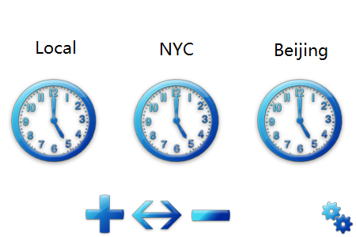
users can drag to right or left to see more cities. (This is the same for most interfaces, I will omit it in later ones)
tapp the three buttons (add, sort, delete) at the bottom of this interface will result in following three interfaces and settings button in lower right corner is useless for now. May provide functions to change appearance of clock.
1.1 add
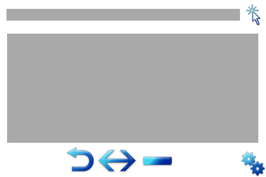
input a name of city in the top input box then press search button, or use fast results instantly showed below to add a time of a city.
tap back button will discard progress and go back. Tap other two buttons will discard progress and jump to corresponding interface.
1.2 sort
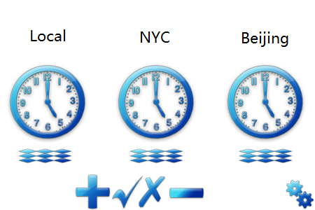
hold on corresponding area to sort clocks.
check button is for confirm changes while cross button is for discard.
1.3 delete
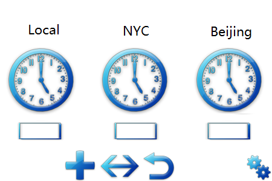
Tap corresponding area to activate deletion, tap again to confirm.
Tap back button to discard changes and go back.
2 Weather
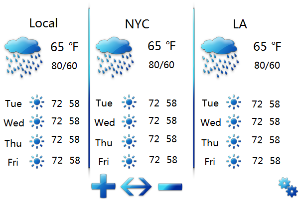
available operations here are similar to Clock.
in settings, user can switch between C and F. If there is no more settings to add, may change this button to direct switch button for user convenience.
2.1 add

2.2 sort
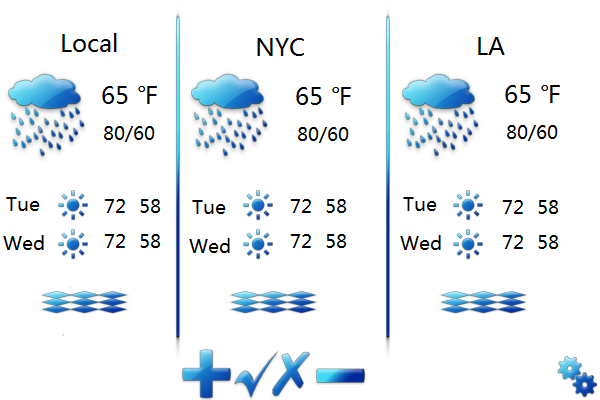
2.3 delete
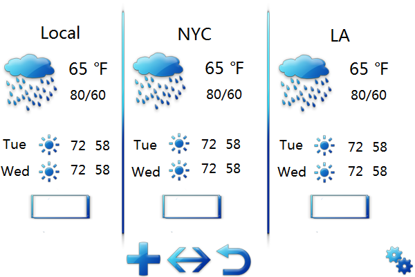
3 Calendar
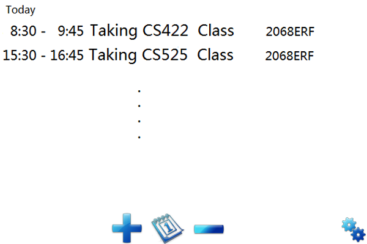
the default default page for Calendar is Agenda. Users can change default page to Calendar if they like.
tap any of the events will enter 'add' interface with all information filled. Just like using Google calendar.
In fact, Calendar in MOrror is actually Google calendar. So, user can add Google account in settings and sync with other platform like PC.
3.1 add
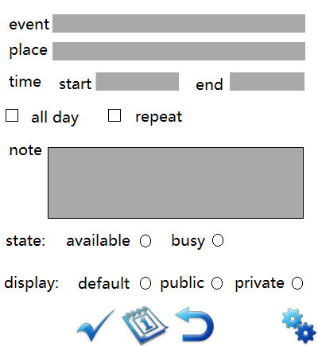
If users come to this page from Calendar page, the middle button will be 'agenda' button.
3.2 calendar
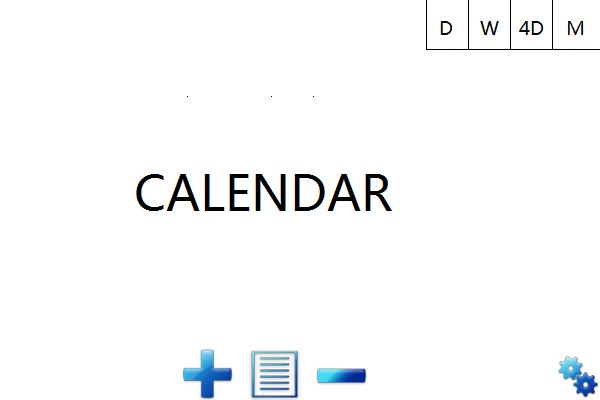
3.3 delete
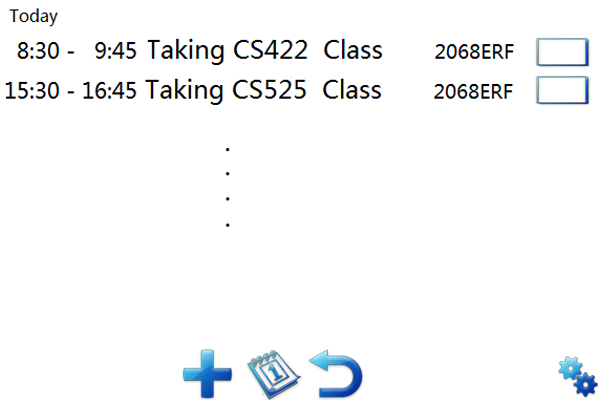
Note: users can also delete events in Calendar page.
4 news
4.1 Overview
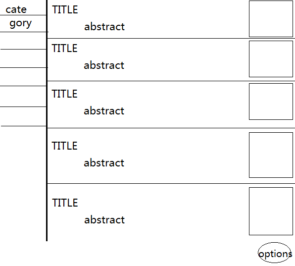
Users can choose from different categories, such as ALL, WORLD, FINANCE, EDUCATION, TECHNOLOGY and so on.
Note: the lower corner button should look like gears just like in other interfaces.
4.2 Detail
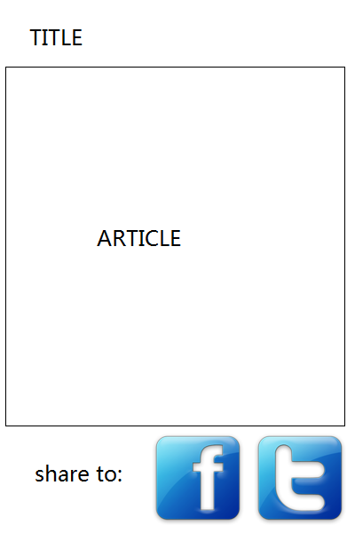
If users like the article, they can share it with friends on Facebook or Twitter.
4.3 Settings
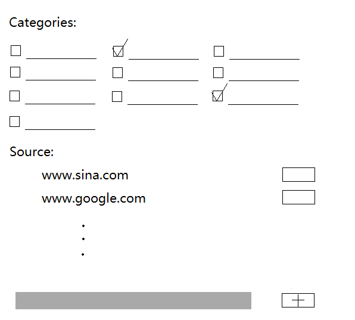
Here users can choose what categories to show up at 'overview' interface.
they can also choose where MOrror will capture news from.
5 Health
5.1 Steps
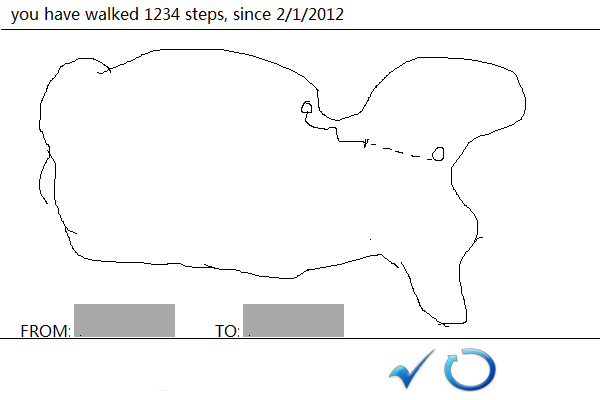
This is an interesting function. Usually, users need on action, just read the number on the screen. But if they like, they can enter this interface by tapping step section on 'main' interface.
Here users can see how far has he/she walked since last reset.
And they can choose a start point and a end point. Google map engine will calculate the result and display it.
In the picture above, I'm trying to walk from Chicago to NYC.
tap refresh button to reset data.
5.2 Calories
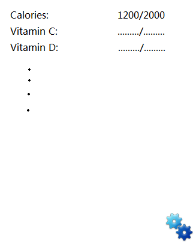
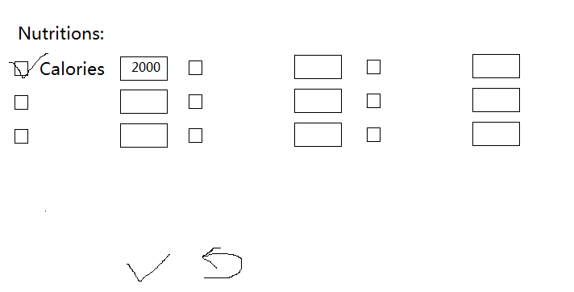
Users can see a variety of nutrition in here and they can change what to see plus give them a 'goal' value.
5.3 Weight
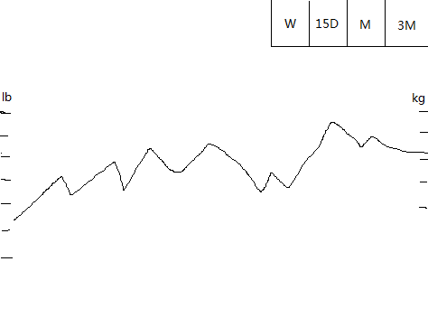
User can change between different view. Week, 15 Days, Month and 3 Months. to see statistic diagram with different time scale.
I prefer to give users 2 units (kg and lb) together so users won't need to do anything to toggle between them.
6 Sleep
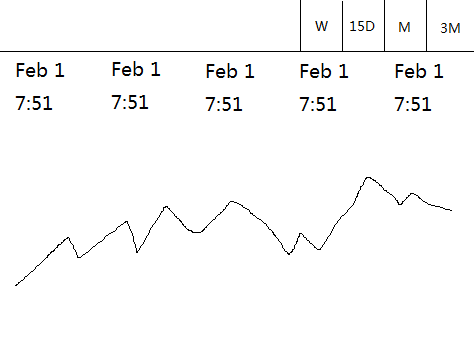
In real interface, the dates displayed are different, of course. And MOrror store more than 5 days data. Uses can drag the interface left and right to see more.
7 Stock
I think people may want to know about situation in stock market as soon as they get up from bed. So I add this gadget to MOrror.
I'll discuss with team to decide interface detail because I don't know about stock.
8 Music
I want to keep this function simple because people either won't stay in the bathroom long or they have more important jobs to do (e.g make up, adjust hair style).
So basic idea here is to use a function called 'broadcasting station' which is poplular in China's SNS websites.
basic principle for this is to provide several play lists by genre of music to the user and if they like some song while listening, they can 'like' it. I user don't want which music, can add them to
The more songs a use 'like', the system can provide music more accurately to him/her.
This feature minimize user's action and keep the application simple.
(I don't if there similar in the US, I hope I explain this function clearly)
9 TV
(or in less frequent situations, users won't miss any fabulous moment during a game, a movie, a program when they have to go to toilet)